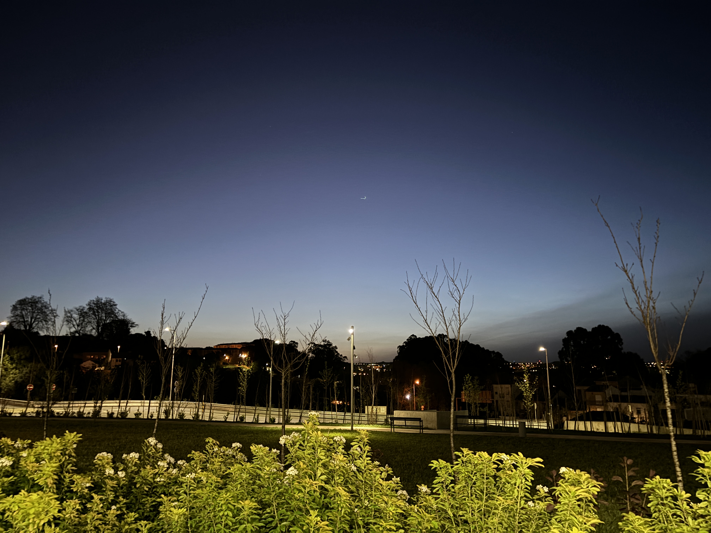
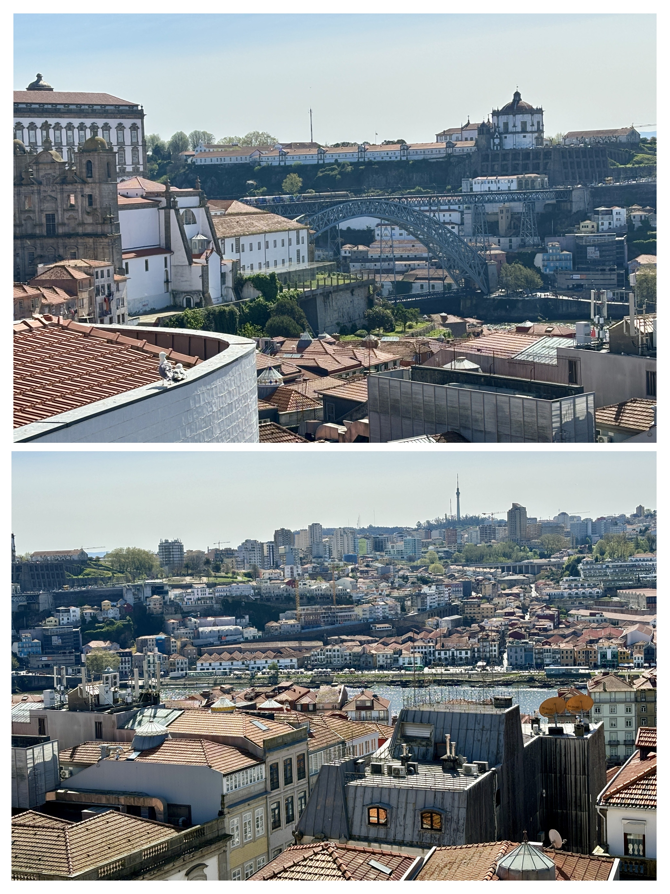
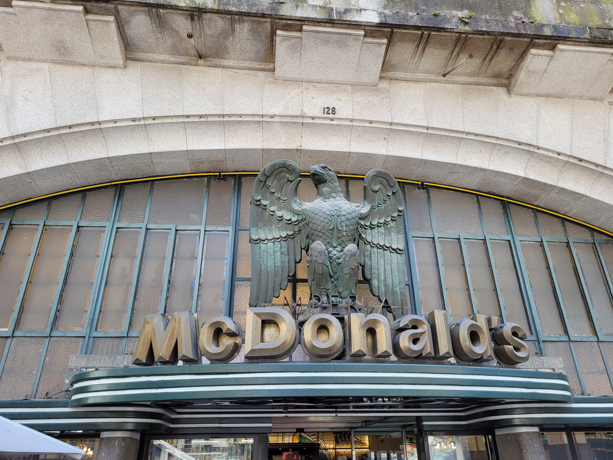

We arrived in Porto on a night bus, groggy and backpacked, at 4 a.m.—way too early to check into our guesthouse. The lady had made it clear: no luggage drop before 10 a.m., and our GuruWalk tour started at 10:30. We did the mental math—guesthouse > wash up > tour point—and quickly realised it was a stretch. So, we did what true travellers do: got ready in the train station washroom.

That washroom—with its glass doors and half-exposed sink areas—felt like a social experiment. I’ve never dressed for a city tour in such cinematic fashion. It felt weirdly empowering. Messy hair, no concealer, strangers walking by—and suddenly I realised most girls around me did know their makeup basics. I didn’t. And yet, there I was, tying up laces and pretending I was part of a movie montage about a girl figuring things out. I wasn’t glamorous. I was present. And that counts for a lot.
We reached the guesthouse by 9 a.m., and the Russian host (not fluent in English but warm in her own way) allowed us to drop off our luggage. Her reception desk was a gallery of world souvenirs—little globes, postcards, trinkets from far corners. I liked her already.
The weather, in hindsight, was a blessing. A little windy, a little sunny, with the occasional drizzle. Considering what came later in the trip, this was premium.
Day 1: Of Wine, Wandering & Wonder
We reached the meeting point by 10 a.m., mostly retracing the entire walking tour path just in search of breakfast. We eventually gave up, munched on protein bars, and began the tour with cautious expectations—especially because, let’s be honest, Xavier had completely ruined us for basic tour guides.
Our guide was sweet, but jhabreile baal wale ladke just don’t work for me. 😂 Yes, I’m biased. No, I won’t apologize.
But Porto itself? Gorgeous. They call it the City of Wine—famous for Port wine, though we debated whether it was worth trying since we aren’t really wine people. Still, the architecture? Classic European drama meets riverside charm. Romans and Moors left behind impressive legacies—sewage systems, cathedrals, and curious street arrangements that whisper stories.

There was even a grand McDonald's housed in a historic building—a mashup of gold trimmed ceilings and fast food counters that felt oddly poetic.

Day 1: When Cities Talk Back
As always, I skipped the food details (reserving that for a proper foodie chapter), but what I won’t skip are the conversations that followed. Our guide shared stories of economic challenges, and how more and more locals were leaving their own country. It hit me—hard.
In India, there’s this unspoken myth: that baahar sab kuch better hota h. But you travel a little and realize—every country has its beauty, its burden, and its balance. Everyone struggles with something. Everywhere is someone’s escape, and someone else’s reality.
And that thought kept echoing as I walked those narrow cobbled lanes.
We also learned that J.K. Rowling lived in Porto for a while—and they say the city inspired Hogwarts. You could see it, honestly. From the fountains to the gothic bookstores, everything here felt a little more enchanted once that rumor got into your head.
Day 2: Beach, Blunders & Nata Redemption
Post-tour, we took a 1.5-hour bus ride to the beach, hoping for a laid-back moment. I was so exhausted, I slept through most of the scenic views—and thanks to Tikku, we missed our stop. Classic.
Cue another round of walking in drizzle and cold, but eventually we reached Porto’s beach. My first beach of the trip. European beach culture is so different. Calm. Quiet. Movie-like. No loud music. Just people, scattered like thoughts, staring into the waves.
We returned to the city and went for dinner at a vegan buffet, which was underwhelming at best. So I turned to Google for dessert therapy—and stumbled upon Pastel de Nata, a flaky, eggy custard tart that absolutely made up for everything. We devoured two, guilt-free. Sometimes a dessert is so good, it deserves a clean conscience.
Back at the guesthouse, the host had kindly placed our bags in our room. We slipped into our beds, muscles sore, skin chilly, hearts a little fuller. The drizzle tapped at the windows like punctuation to the paragraph of our day.
Must-Visit Places in Porto
If you ever find yourself in Porto, here are some incredible spots to explore:
- Ribeira District: Colorful riverside buildings.
- Livraria Lello: Majestic historic library facade.
- Clérigos Tower: Panoramic views of the city.
- Dom Luís I Bridge: The famous iron arch bridge.
- São Bento Railway Station: Captivating azulejo tile murals.
- Palácio da Bolsa: The breathtaking Arab Room.
- Church of São Francisco: Ornate Baroque interiors.
- Port Wine Cellars: Local cellars at Vila Nova de Gaia.